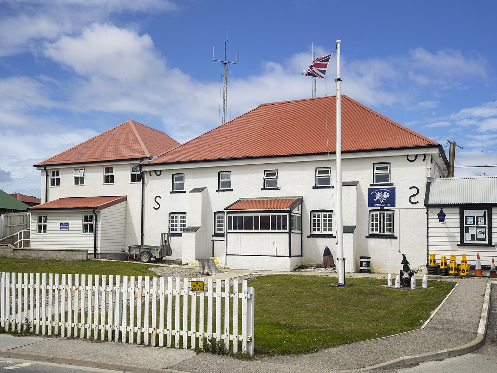
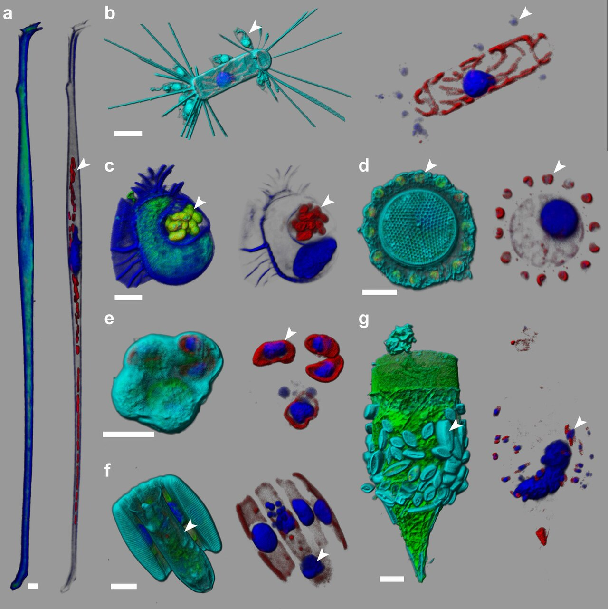
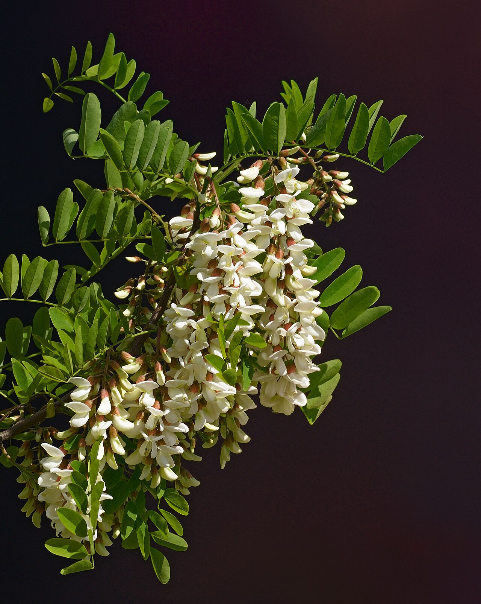
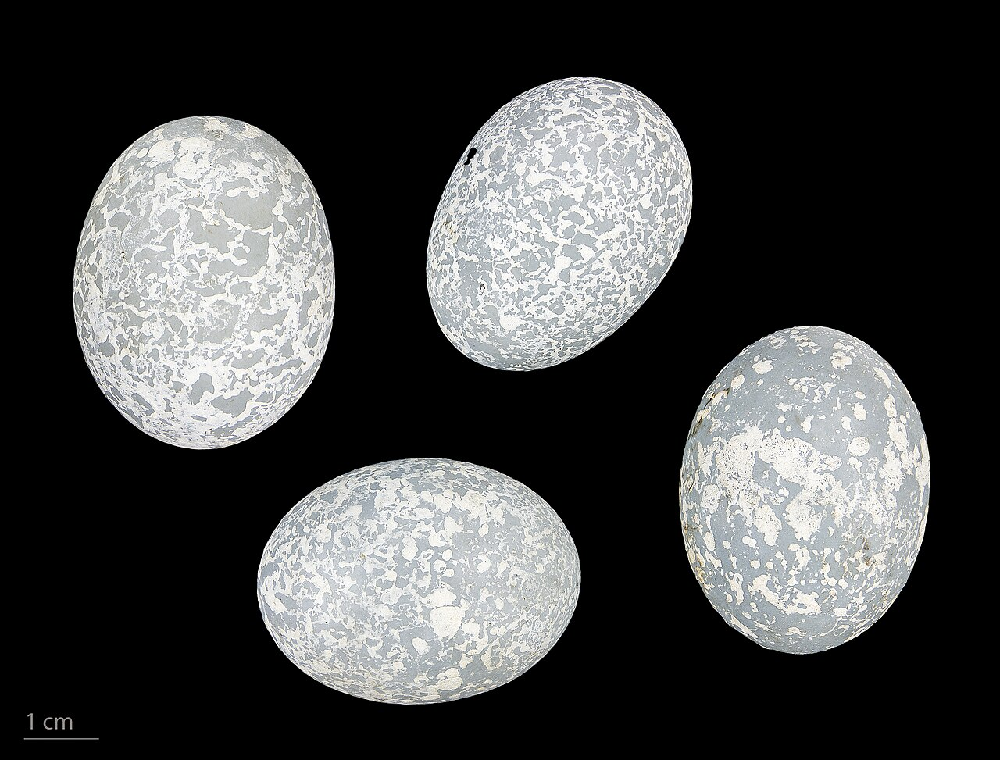
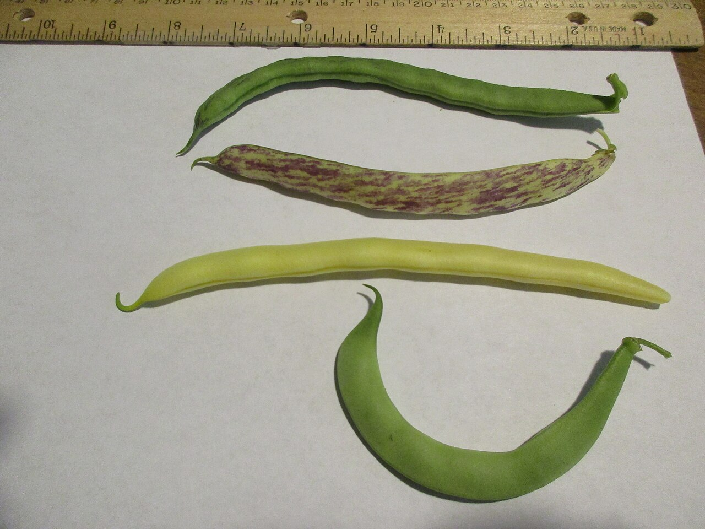
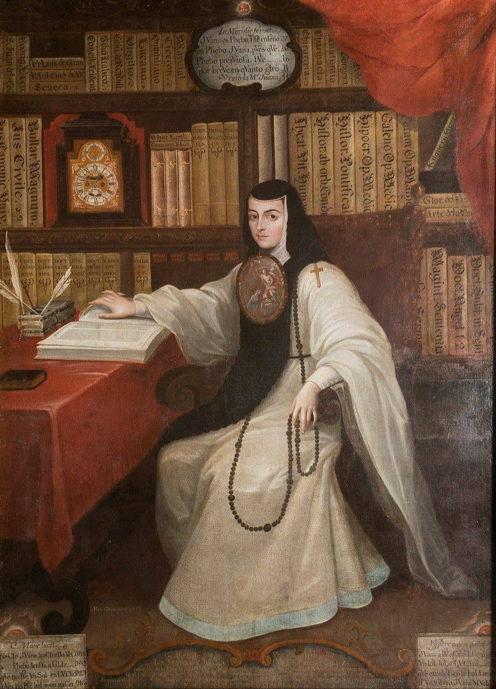
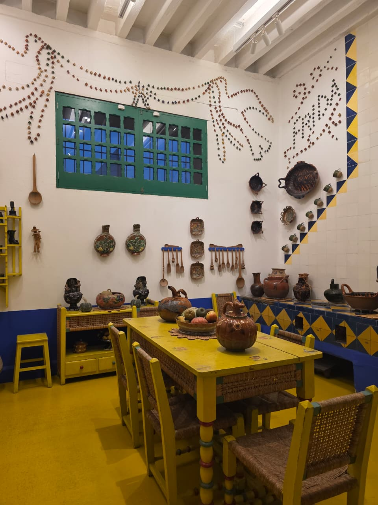
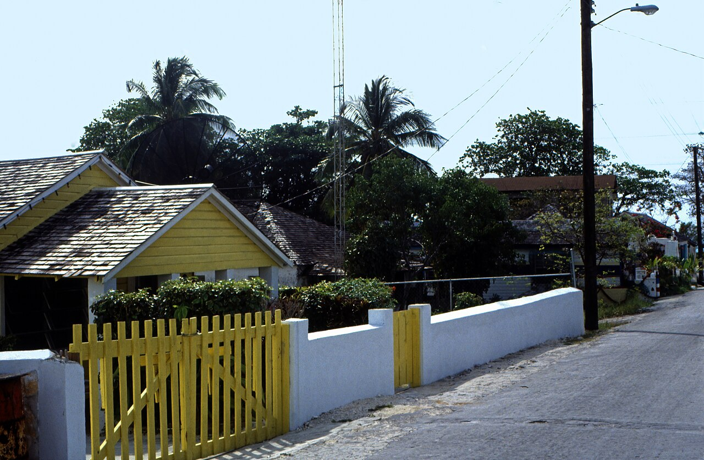

diario de la mañana — el mundo, tu ciudad y lo que te asombra
Nº 12Lunes 12 de octubre de 2026Buenos Aires≈ 35 min de lectura
Tapa: Frida Kahlo, fotografiada por su padre, Guillermo Kahlo. Hoy es lunes de arte. Foto: Guillermo Kahlo · Public domain · Wikimedia CommonsArte y museos
Buen día, y feliz feriado. Hoy es el Día del Respeto a la Diversidad Cultural, el 12 de octubre que hasta 2010 se llamaba Día de la Raza. La edición va por ese lado: una pintora mexicana que se vistió de tehuana como manifiesto, una monja que en el siglo XVII les cantó las cuarenta a los hombres, y la palabra «cultura». En ciencia, el ser vivo con menos genes que algunos virus. Y vence hoy el ultimátum que Milei le dio a Londres por el petróleo de Malvinas.
14° / 19°Mayormente nublado y agradable. Puede caer alguna llovizna temprano (10 a 20 %), después se mantiene seco. Viento moderado del sudeste.
Un huracán de categoría 4 sobre el Pacífico mexicano
MéxicoEl huracán Simón inunda Jalisco
El huracán Simón, ya de categoría 4, avanza por el Pacífico hacia la costa mexicana y deja lluvias extraordinarias en Jalisco. El viernes se habían habilitado refugios en Acapulco. Es una temporada de huracanes especialmente activa en el Pacífico oriental.
Ucrania17 muertos en Zaporiyia
Los bombardeos rusos sobre la región de Zaporiyia dejaron al menos 17 muertos durante el fin de semana, mientras Rusia intensifica sus ataques. Ucrania, por su parte, atacó una terminal petrolera en Rostov.
Yemen · Arabia SauditaEscalada con los hutíes
La coalición liderada por Arabia Saudita intensificó sus bombardeos contra posiciones hutíes en Saná, después de que la milicia atacara aeropuertos y otras instalaciones civiles saudíes. Yemen arrastra desde 2014 una de las peores crisis humanitarias del mundo.
Sur de EuropaTornados en Sicilia y protestas en Portugal
Varios tornados golpearon Sicilia, con autos volcados y edificios dañados. En Portugal, miles de personas salieron a la calle por el costo de vida y de la vivienda, el mismo reclamo que hizo caer la legislatura española la semana pasada.
Por qué importa: la vivienda se volvió la gran cuestión política del sur de Europa. Lisboa, Madrid y Barcelona están entre las ciudades donde más subieron los alquileres en la última década, con el turismo y la inversión extranjera como protagonistas.
SueciaÚltimo Nobel del año
La Academia Sueca anuncia hoy, a las 6:45 de Buenos Aires, el premio de Economía, el último de la temporada. Los mercados de predicción ponían arriba al estadounidense Ariel Pakes (organización industrial) y a Susan Athey (economía digital). Mañana te cuento quién ganó.
Argentina y Buenos Aires no vivir adentro de un táper
Vence el plazo por Malvinas
Sea Lion: Argentina prepara la demanda ante el tribunal del mar

Puerto Argentino (Stanley), en las islas Malvinas. Foto: Godot13 · CC BY-SA 4.0 · Wikimedia Commons
El 28 de septiembre, Milei le dio dos semanas al Reino Unido para frenar Sea Lion, el proyecto petrolero al norte de las islas que encabezan la británica Rockhopper Exploration y la israelí Navitas Petroleum, con producción prevista para 2028. El plazo vence ahora. El Gobierno dice que ya inició un arbitraje bajo la Convención de las Naciones Unidas sobre el Derecho del Mar (CONVEMAR), y se espera que pida al Tribunal Internacional del Derecho del Mar, en Hamburgo, una medida cautelar para suspender el proyecto. Londres anticipó que va a ignorar el plazo.
Para pensar: aunque el tribunal ordenara frenar el proyecto, no tiene cómo obligar a cumplirlo. Pero una cautelar a favor tendría peso diplomático y complicaría la financiación de las petroleras.
Feriado: qué abre y qué no
Hoy cierra el fin de semana largo. Los museos nacionales, como el Bellas Artes, abren de martes a domingo, así que hoy están cerrados. El MALBA abre todos los días menos los martes: hoy podés ir a ver a Frida (más en la sección de arte).
Ciencia nivel colega
Sukunaarchaeum mirabile: una célula que guardó solo la maquinaria para copiarse
¿Cuántos genes necesita una célula para ser una célula? En 2016, el equipo de Craig Venter respondió en el laboratorio con JCVI-syn3.0, una Mycoplasma sintética con 473 genes. La naturaleza tenía una respuesta más extrema. Un grupo de la Universidad de Tsukuba y la Universidad de Nottingham (Harada y colaboradores) describe en Current Biology una arquea marina con un genoma de 238 kpb y apenas 189 genes codificantes de proteínas: menos de la mitad que la arquea más chica conocida hasta ahora, y menos proteínas que muchos virus grandes.

Un dinoflagelado del plancton marino. En uno de ellos apareció el ADN de Sukunaarchaeum. Foto: Sebastien Colin, Luis Pedro Coelho, Shinichi Sunagawa, Ch… · CC BY-SA 4.0 · Wikimedia Commons
Cómo la encontraron
Por accidente: el equipo estudiaba la comunidad microbiana asociada a un dinoflagelado marino, Citharistes regius. Al secuenciar el genoma amplificado de una sola célula (SAG), apareció un genoma circular pequeño que no se parecía a nada conocido.
La filogenia: con proteínas ribosomales y otros marcadores conservados, se ubica como un linaje nuevo y profundo de arqueas, sin parientes cercanos en las bases de datos. El nombre viene de Sukuna-biko-na, un dios diminuto de la mitología japonesa, y mirabile, «asombroso».
Qué tiene y qué perdió
Conserva el «núcleo replicativo»: replicación del ADN, transcripción y traducción completas (ARN polimerasa, ribosomas, factores de traducción, aminoacil-ARNt sintetasas).
Perdió casi todo el metabolismo: no tiene vías para producir energía (ni glucólisis completa ni cadena respiratoria) ni para sintetizar aminoácidos, nucleótidos o lípidos. Tiene que obtener todo de otra célula.
Por eso los autores la llaman «entidad celular»: como un virus, depende de un huésped para el metabolismo; a diferencia de un virus, tiene sus propios ribosomas y traduce sus propias proteínas. Es un punto intermedio en el continuo entre lo vivo y lo «casi vivo».
Lectura crítica
Nadie la vio. Todo sale de secuencias: no se observó la célula al microscopio ni se cultivó, y no está confirmado quién es el huésped. Podría vivir dentro del dinoflagelado, sobre él o sobre otro microorganismo de la misma muestra.
Un SAG puede estar incompleto o contaminado. Que sea un genoma circular cerrado y que los genes de copia única estén completos da confianza, pero la confirmación definitiva requiere ver la célula, por ejemplo con FISH y una sonda específica.
El récord depende de cómo se defina: la bacteria simbionte Carsonella ruddii tiene un genoma todavía más chico, de unas 160 kpb, pero ya perdió parte de su maquinaria de traducción (más en el asombro).
La conexión con lo que estudiás
Es el sueño de la biología sintética «de abajo hacia arriba»: el chasis mínimo. JCVI-syn3.0 tiene 473 genes, y de 149 de ellos no se conocía la función cuando se publicó. Si una célula natural funciona con 189, la lista de lo «esencial» es mucho más corta de lo que se pensaba, siempre que haya un huésped que ponga el metabolismo. Para la biotecnología, la pregunta es si se podría diseñar un organismo de producción así: solo maquinaria de expresión, alimentado desde afuera.
Harada R, et al. «A cellular entity retaining only its replicative core: hidden archaeal lineage with an ultra-reduced genome». Current Biology (2026), doi:10.1016/j.cub.2026.09.042 (preprint en bioRxiv) · Phys.org · News-Medical
Biotec en el mundo real · Kheiron: los primeros caballos editados del mundo son de polo, y argentinos
Un caballo de polo. Foto: Clément Bucco-Lechat · CC BY-SA 3.0 · Wikimedia Commons
Kheiron Biotech es una empresa argentina de clonación equina que presentó, a fines de 2024, los que serían los primeros caballos editados genéticamente del mundo: cinco potros clonados de una yegua de polo campeona, Polo Pureza, con una edición CRISPR en el gen de la miostatina (MSTN).
Por qué la miostatina: es un miembro de la familia TGF-β que frena el crecimiento del músculo esquelético. Las variantes que reducen su función dan más masa muscular. En vacas, las razas «doble músculo», como la Belgian Blue, tienen mutaciones naturales en MSTN. En los caballos pura sangre, una variante en el promotor de MSTN se asocia con la aptitud para la velocidad.
Cómo se hace: se combina la clonación por transferencia nuclear (la misma técnica de Dolly y de Rosita ISA) con la edición CRISPR-Cas9 durante el proceso, y los embriones editados se transfieren a yeguas receptoras.
El marco regulatorio: la Argentina fue pionera en 2015 con una norma que analiza caso por caso los productos de nuevas técnicas de mejoramiento. Si el producto final no lleva un transgén (ADN foráneo), no se considera un OGM. Por eso estos caballos pueden no ser «transgénicos», aunque estén editados.
La polémica: la Asociación Argentina de Criadores de Caballos de Polo decidió no registrarlos por ahora y observar su desarrollo durante años antes de decidir si pueden competir. Es una discusión sobre la edición genética en animales, y también sobre la tradición en un deporte donde la Argentina es potencia mundial.
Salida laboral: reproducción asistida y clonación animal, edición génica, bioética y asuntos regulatorios en biotecnología agropecuaria.
Ciencia en la vida cotidiana · Por qué el pan del viernes está duro (y no es que se secó)
El pan se pone duro aunque esté envuelto y no pierda agua. Lo que pasa es la retrogradación del almidón. En el horno, los gránulos de almidón se gelatinizaron: absorbieron agua, se hincharon y sus cadenas se desordenaron. Al enfriarse, la amilosa (lineal) se reorganiza en horas en dobles hélices que cristalizan, y en los días siguientes lo hace la amilopectina (ramificada). Esas zonas cristalinas atrapan agua y endurecen la miga.
Por eso: la heladera lo pone duro más rápido, porque la retrogradación es máxima entre 0 y 10 °C, y el freezer lo frena. Y unos minutos de horno lo «revive»: a más de 60 °C los cristales de amilopectina se funden otra vez. Ojo: el almidón retrogradado es parte del almidón resistente, que llega al colon y fermenta como si fuera fibra.
Mirá a tu alrededor árbol y ave de la semana
La acacia blanca en flor y el pirincho, que cría en grupo

Racimos de la acacia blanca. Foto: Ввласенко · CC BY-SA 3.0 · Wikimedia Commons

Pirincho: copete naranja despeinado. Foto: Roger Culos · CC BY-SA 4.0 · Wikimedia Commons
El árbol: acacia blanca
Nombre científico
Robinia pseudoacacia (Fabáceas), originaria del este de Norteamérica
Dónde
Calles, plazas y terrenos baldíos; se naturalizó en toda la región y es invasora en algunas zonas.
Por qué ahora
Entre octubre y noviembre se cubre de racimos colgantes de flores blancas, muy perfumadas, que atraen a las abejas: la miel de acacia es de las más claras.
Cómo reconocerla
Hojas compuestas con 9 a 19 folíolos ovalados, corteza gris con surcos profundos y un par de espinas en la base de cada hoja. Como buena leguminosa, fija nitrógeno con Rhizobium en sus raíces.
El ave: pirincho
Nombre científico
Guira guira (Cucúlidos, la familia del cuco)
Cómo reconocerlo
Unos 36 cm, cola muy larga, cuerpo pardo claro rayado, un copete naranja despeinado y ojos amarillos. Anda en grupos ruidosos de 6 a 10.
Por qué ahora
En primavera crían en grupo: varias hembras ponen sus huevos azul turquesa en un nido comunitario, y todos los adultos ayudan a incubar y alimentar.
Dato
A la mañana temprano se los ve tomando sol amontonados en una rama, con las plumas abiertas: es su forma de calentarse después de una noche fría.
Tu misión de hoy
Receta de estación chauchas de primavera · con su química
Chauchas salteadas con ajo y almendras
Quince minutos. Verdes brillantes, crocantes y con un toque tostado.

Chauchas. Foto: Christopher Franz · CC BY-SA 4.0 · Wikimedia Commons
Ingredientes (2 porciones)
300 g de chauchas
2 dientes de ajo en láminas
Un puñado de almendras fileteadas
Aceite de oliva, sal y unas gotas de limón al final
Pasos
Sacales las puntas. Hervilas 3 minutos en abundante agua con sal y pasalas enseguida a agua con hielo.
Tostá las almendras en una sartén seca y reservalas.
Saltá el ajo en aceite a fuego medio, sin que se queme, y sumá las chauchas 2 minutos.
Fuera del fuego: almendras, sal y el limón recién al servir.
La química de la receta
El verde más brillante: en el primer minuto de hervor, el aire que hay entre las células de la vaina se escapa, y se ve mejor el verde de la clorofila. Si se cocinan de más, o con ácido, el H⁺ desplaza el ion Mg²⁺ del centro del anillo de la clorofila y se forma feofitina, de color verde oliva. Por eso se cortan con hielo y el limón va recién al final.
No se comen crudas: las chauchas, como los porotos, tienen fitohemaglutinina, una lectina que se une a glicoproteínas del epitelio intestinal y causa vómitos. El hervor la desnaturaliza.
Las almendras tostadas: reacción de Maillard entre los azúcares y los aminoácidos de la superficie: pirazinas y furanos que huelen a tostado.
Un clásico en cinco minutos
Sor Juana Inés de la Cruz, «Hombres necios que acusáis» (c. 1689)
La «Décima Musa», en Nueva España. Primeras estrofas de la redondilla.

Sor Juana, en el retrato de Miguel Cabrera (1750). Foto: Miguel Cabrera · Public domain · Wikimedia Commons
Hombres necios que acusáis a la mujer sin razón, sin ver que sois la ocasión de lo mismo que culpáis:
si con ansia sin igual solicitáis su desdén, ¿por qué queréis que obren bien si las incitáis al mal?
Combatís su resistencia y luego, con gravedad, decís que fue liviandad lo que hizo la diligencia.
[…]
Para entrar al poema
La autora: aprendió a leer a los tres años, quiso ir a la universidad disfrazada de varón y, como no la dejaban, se hizo monja para poder estudiar. En su celda llegó a tener una de las bibliotecas más grandes de América.
El argumento: es casi un silogismo. Los hombres persiguen a las mujeres y después las culpan por ceder; las desprecian si resisten y si no resisten también. La pregunta final del poema es quién es más culpable: «la que peca por la paga / o el que paga por pecar».
El puente: doscientos treinta años después, Alfonsina Storni le hace el mismo reclamo al «buen hombre» en «Tú me quieres blanca» (lo leíste el miércoles 7). Y Frida, en la sección de arte, también es mexicana y también se construyó una imagen propia contra lo que se esperaba de ella.
La palabra del día de dónde viene
cultura sustantivo
latín colere (cultivar, habitar, venerar) → cultura (cultivo de la tierra) → castellano cultura · francés culture · inglés culture
El verbo latino colere tenía tres sentidos que hoy parecen muy distintos: cultivar la tierra, habitar un lugar y venerar a los dioses. De ahí salen cultivo, colono y culto. Cultura era primero la agricultura, y Cicerón usó la metáfora de la cultura animi, el «cultivo del alma»: la filosofía labra el espíritu como el arado la tierra.
La biología se quedó con el sentido original: un cultivo celular o un medio de cultivo son «cultura» en inglés (cell culture). Así que cuando trabajás con células CHO en una campana estás haciendo, etimológicamente, lo mismo que un agricultor romano.
Le français du matin semana 3: la rutina de la mañana
Je me lève à sept heures
Arranca un tema nuevo: lo que hacés cada mañana. Escuchalo dos veces.
Je me lève à sept heures.
Je me douche.
Je prends le petit-déjeuner.
Je lis Lula !
Je me lève
Me levanto [yə mə LEV]
Je me douche
Me ducho [yə mə DUSH]
Je prends
Tomo (agarro) [yə PRAN]
le petit-déjeuner
el desayuno [lə pə-TI de-yø-NÉ]
Je lis
Leo [yə LI]
Un truco
Je me lève funciona igual que «me levanto»: es un verbo reflexivo, y el pronombre va adelante, como en castellano. Y petit-déjeuner quiere decir, literalmente, «pequeño desayuno»: déjeuner es «romper el ayuno», igual que «des-ayuno». En Francia, le déjeuner es el almuerzo.
À toi:
English corner level C1 · international law
Taking the Falklands fight to the law of the sea
For more than four decades, Argentina's claim to the Falkland Islands, or Malvinas, has been pursued largely through diplomatic channels and annual resolutions at the United Nations. This week, Buenos Aires is expected to try a different tack. With a two-week ultimatum to London now expired, the government of Javier Milei says it has set in motion an arbitration under the UN Convention on the Law of the Sea and will ask the International Tribunal for the Law of the Sea, in Hamburg, to halt the Sea Lion oil project north of the islands.
On paper, the move is a long shot. Britain has made clear it will disregard the deadline, and international tribunals have no police force with which to enforce their rulings. Yet legal action of this kind is rarely only about winning. A provisional order in Argentina's favour, however toothless in practice, could spook lenders and insurers, raise the cost of capital for the companies involved and lend fresh weight to Buenos Aires's position in every diplomatic forum.
Whether the tribunal agrees even to hear the case is far from certain. But the shift from rhetoric to litigation marks a notable change in strategy, and one that both sides will be watching closely.
to try a different tack — probar otra estrategia
to set in motion — poner en marcha
a long shot — algo con pocas chances
to disregard — ignorar, no hacer caso
toothless — sin dientes, sin poder real
to spook — asustar, poner nervioso (a un inversor)
to lend weight to — dar peso, respaldar
far from certain — para nada seguro
Your turn (answer in English):
Lunes de arte arte y museos
Frida Kahlo, «Autorretrato con chango y loro» (1942)
Un cuadro que está en Buenos Aires desde 1995, y que ahora se puede ver junto a la ropa de Frida en el MALBA.

La Casa Azul, en Coyoacán, donde Frida nació y vivió: hoy es el Museo Frida Kahlo. Foto: Rebeccananonof · CC0 · Wikimedia Commons
Frida mira de frente, seria, con las cejas unidas y el pelo trenzado con una cinta. Sobre su hombro izquierdo hay un mono araña (un «chango», en México) que la abraza; sobre el derecho, un loro verde. Detrás, un fondo de hojas grandes que lo llena todo. Es un cuadro chico, de unos 55 × 43 cm, pintado en 1942, cuando Kahlo ya era conocida en París y en Nueva York y había vuelto a casarse con Diego Rivera.
Eduardo Costantini lo compró en una subasta en Nueva York en 1995, y es una de las joyas de la colección del MALBA. Hasta el 15 de marzo de 2027, se exhibe dentro de «Viva Frida», la primera gran muestra de Kahlo en Sudamérica: trajes de tehuana, joyas, corsés ortopédicos y cosméticos que estaban guardados en la Casa Azul, junto a Diego y yo (1949), su último autorretrato importante. La organizaron el Museo Frida Kahlo de México y la Semana de la Alta Costura Argentina.
Cómo mirarlo
Los animales: Frida no tuvo hijos, y en la Casa Azul vivía con monos, loros, perros xoloitzcuintle y un ciervo. En sus autorretratos los monos aparecen como compañía y como una forma de ternura. Fijate en el brazo del mono alrededor de su cuello.
La frontalidad: es una pose de retablo o de exvoto, la pintura popular religiosa mexicana que Frida coleccionaba. No hay paisaje, ni profundidad, ni anécdota: solo ella.
La ropa como manifiesto: Frida eligió vestirse de tehuana, el traje de las mujeres de Tehuantepec, en Oaxaca, famosas por su independencia. Era una afirmación política de lo indígena y lo mexicano frente a la moda europea. Y además el traje largo disimulaba la pierna afectada por la polio y las secuelas del accidente de 1925. Por eso la muestra junta su ropa y sus corsés: la imagen y el cuerpo.
Dónde: MALBA, Av. Figueroa Alcorta 3415. «Viva Frida», hasta el 15 de marzo de 2027. Abre todos los días menos los martes; fijate horarios y entradas en malba.org.ar.
Hoy en la historia · un lugar en el mapa
12 de octubre de 1492: Colón llega a Guanahaní
A las dos de la madrugada, el marinero Rodrigo de Triana vio tierra desde La Pinta. Al amanecer, Cristóbal Colón desembarcó en una isla que los lucayos, un pueblo taíno, llamaban Guanahaní, y la rebautizó San Salvador. Creía haber llegado a las Indias. En su diario describió a los habitantes como gente pacífica que «muy presto se harían cristianos», y que podrían ser buenos servidores. En menos de treinta años, los lucayos habían desaparecido: muertos por enfermedades o deportados como esclavos a La Española.
En la Argentina, el 12 de octubre fue el «Día de la Raza» desde 1917. En 2010 pasó a llamarse Día del Respeto a la Diversidad Cultural, para reflexionar sobre los pueblos originarios y sobre la diversidad de culturas que forman el país, en lugar de celebrar la conquista.
El lugar: San Salvador, Bahamas

La isla de San Salvador, en las Bahamas. Foto: Rüdiger Stehn from Kiel, Deutschland · CC BY-SA 2.0 · Wikimedia Commons
Dónde
En el este de las Bahamas, en el Atlántico, al norte de Cuba.
Duda histórica
No se sabe con certeza cuál fue la isla de Colón. San Salvador (antes Watling) es la candidata tradicional, pero hay estudios que proponen otras, como Samana Cay.
Hoy
Una isla de unos 160 km² y menos de mil habitantes, con un monumento a la llegada de Colón y arrecifes muy visitados por buceadores.
Lo que me asombra hoy
La bacteria que se está convirtiendo en un órgano
Candidatus Carsonella ruddii vive dentro de unas células especiales (bacteriocitos) de los psílidos, unos insectos chiquitos que chupan savia. Su genoma tiene unas 160.000 pares de bases y alrededor de 180 genes: es uno de los más chicos que se conocen. Pero, a diferencia de Sukunaarchaeum, ya perdió genes que parecían indispensables para cualquier célula, incluidos varios de la replicación y de la traducción. Solo sobrevive porque el insecto le aporta lo que le falta, y a cambio produce aminoácidos esenciales que la savia no tiene.
Los biólogos discuten si todavía es una bacteria o si ya es un orgánulo en formación, como lo fueron hace unos dos mil millones de años las mitocondrias. Hablando de eso: el genoma de tus mitocondrias tiene 16.569 pares de bases y 37 genes. Es lo que queda de una bacteria libre que entró en una célula y nunca más salió.
Pasatiempo sudoku · nivel fácil
Para arrancar la semana
Completá cada fila, cada columna y cada caja de 3×3 con los números del 1 al 9, sin repetir. Tiene una sola solución.
35463364592177963538216692452156897124
Cuaderno para repasar lo de hoy
Repaso y quiz de la mañana
Repaso de idiomas
Quiz
¿Cuántos genes codificantes de proteínas tiene Sukunaarchaeum?
¿Qué conservó Sukunaarchaeum?
¿Qué gen editó Kheiron en los caballos de polo?
¿Por qué el pan se endurece?
¿Qué le pasa a la clorofila con el ácido?
¿Cómo crían los pirinchos?
¿En qué museo está el «Autorretrato con chango y loro»?
¿Cómo llamaban los lucayos a la isla donde llegó Colón?
«Je me lève à sept heures» significa…
«A long shot» es…
Escritura: tres líneas para hoy
Soluciones tocá para destapardadas vuelta, para no espiar
Quiz: 189 · replicación, transcripción y traducción · la miostatina · la retrogradación del almidón · pierde el Mg²⁺ · nidos comunitarios · MALBA · Guanahaní · me levanto a las siete · algo con pocas chances.
Repaso: demain, c'est samedi · il est huit heures · bon week-end · contra todo pronóstico · disimular, tapar · el que corre de atrás, el menos favorito.
English 1 (por ejemplo): It could scare lenders and insurers and raise the companies' cost of capital, even if it cannot be enforced.